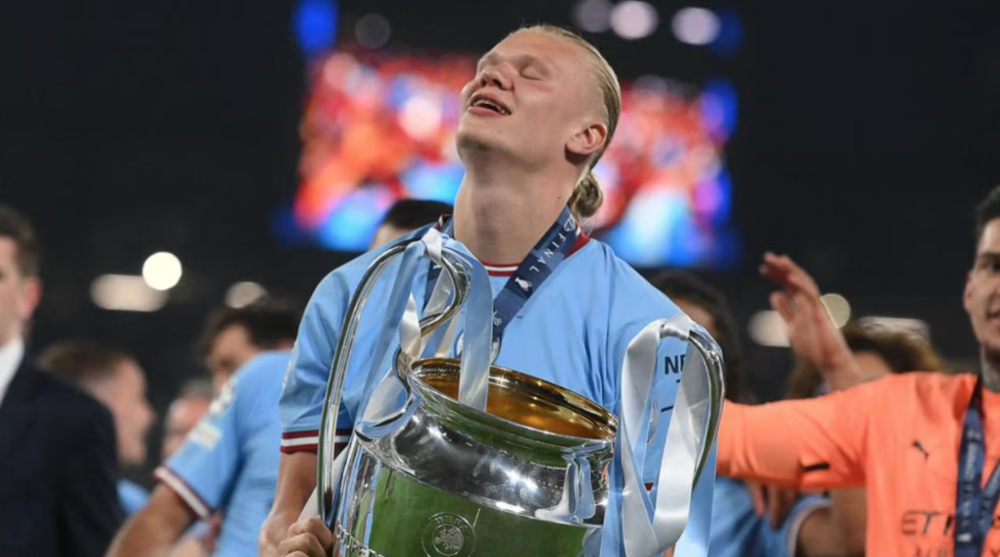
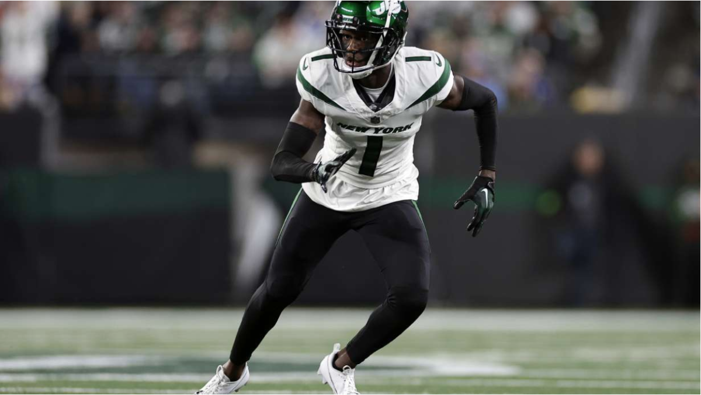
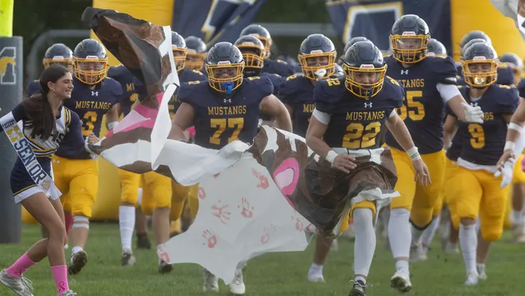
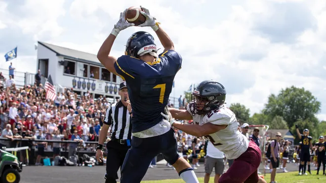

Current State of the UEFA Men's Championships League (2025 - 2026 Season)
Jeremy Barenberg
November 23, 2025

New Format
The new format of the UEFA Champions League will replace the group stage format starting in the 2025-26 season for all participating clubs. Instead of the traditional group stage, there will be one league table with 36 teams. This structure provides for differing competition and appealing match-ups, resulting in exciting group matches to watch. All clubs involved will compete in the tournament by playing 8 games, which are split into four home and four away matches, based on seeding. After this stage of the competition, the top eight clubs will advance to round of 16, with all other clubs competing for the remaining spots.
Current Standings- 11/12
In UEFA, a team gets three points for a win, 1 point for a draw, and 0 points for a loss. The current standings show a tight race, led by Bayern Munich and Arsenal. Bayern Munich and Arsenal are both tied with 12 points and a goal differential of +11. Right behind them is Inter Milan, with 12 points and a goal differential of +10. Manchester City sit in fourth with 10 points after three wins and a draw. In respective order in the standings, Paris Saint-Germain, Newcastle United, Real Madrid, and Liverpool all have won three games and lost one. All 4 teams have 9 points each, separated only by goal difference, shaping the final matches to be the most important yet.
Key Players in the Tournament
Several important individuals have affected the tournament positively. For Bayern Munich, forward Harry Kane has been one of the tournament’s leading scorers to help his team remain undefeated in the tournament’s early going. Just behind Bayern, Arsenal have their dominant right winger, Bukayo Saka, leading the offense in goals and assists in the early going. For Inter Milan, forward Lautaro Martinez has been their primary source of goals, and his productivity and finishing under pressure helped them leapfrog his team into a top-three seed of the tournament. Other major difference makers making a difference in the tournament included forward Erling Haaland from Manchester City, forward Kylian Mbappe from Real Madrid, and defender Virgil Van Dijk from Liverpool. For teams out of the top eight players, it is a battle to help their teams have a possible higher standing or chance at receiving a playoff spot.
More In Sports

NFL Trade Deadline 2025

MHS Football Report

Middletown South at Marlboro Football Friday 9/26/26

COP30: The Globe's 30th Climate Conference

College Polls: Data and Statistics from U.S. Admissions